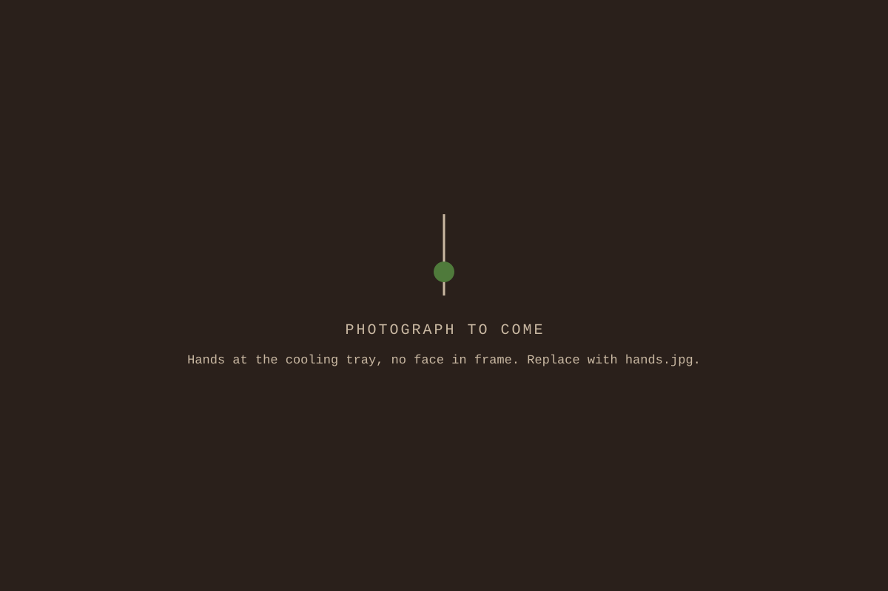

Months 1–3
The room
Green grading, the mill, the cooling tray, cleaning the drum. Cupping every Thursday from the first week, because the palate takes the longest to build.
The work
rooted is a neighborhood enterprise in South Charlotte. We roast coffee, we hire and train neighbors to do the work, and the people who live here help run it. Most of the people we hire have been through the justice system. We hire them as roasters, and roaster is the job title.
A roaster here grades green coffee, loads the drum, pulls samples, listens for first crack, drops the roast, rakes the cooling tray, cups on Thursday, packs bags, keeps the log, and runs deliveries. It is production work with a palate in it.
The wage is hourly and it starts on the first day of training. Year one, the coffee pays part of the wages. Not all of them. Grants and gifts through the church carry the rest while the anchor accounts grow. The cohort knows that number. Nobody here is pretending the business is bigger than it is.

Training runs a year. It is a curriculum, not a probation, and nobody’s place in the room depends on where they are in it.
Green grading, the mill, the cooling tray, cleaning the drum. Cupping every Thursday from the first week, because the palate takes the longest to build.
Roasting on the machine with a lead roaster at your shoulder. Keeping the log. Learning to read the bean instead of the clock.
Your own roasts on the shelf. Deliveries, pop-ups, and talking with the people who drink what you made.
An anchor account handled end to end, from green buying to invoice. Then a choice: stay and go deeper, or take the trade somewhere else with our reference in hand.
The titles run trainee roaster, roaster, lead roaster. Every rung is a raise.
A trainee roaster is learning the machine, on the wage from day one. A roaster runs production and signs the log. A lead roaster buys green, sets the roast schedule, and trains the next cohort.
The trade is portable on purpose. Roasting is a real craft with a real market, and someone who finishes the year can work anywhere green coffee gets hot. We would rather they stay. That has to be earned by the job, not by the story around it.
The model comes from Homeboy Industries in Los Angeles, which has run real businesses with real payrolls for decades and put kinship at the center of them. Work is the occasion. The table is the point.
We are not Homeboy. We are a church and its neighbors in Charlotte, starting with one roaster and one cohort. But when someone asks where the idea comes from, that is the answer, and we give it with gratitude.
There is no portal and no application season. Come by 2516 South Tryon Street and ask about the cohort, or write to darryl@rootedclt.org, or call (980) 785-4280.
rooted was built with these blocks. If you live in Brookhill Village or Southside, the shortest path is to walk over.